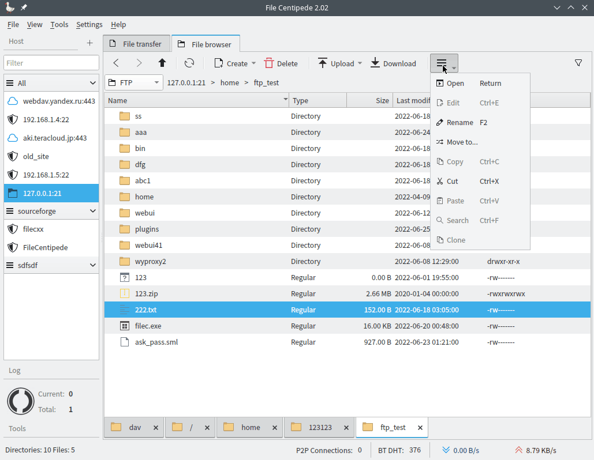

File Centipede также является FTP-менеджером файлов: он может загружать файлы с FTP-сервера и выгружать их на сервер, включая каталоги или весь FTP-сайт.
Программа очень проста в использовании: не нужно вводить множество настроек, достаточно ввести адрес хоста в адресную строку.

Чтобы максимально ускорить отображение списка файлов каталога, File Centipede может кэшировать все посещённые вами каталоги, поэтому при следующем открытии того же каталога это будет похоже на открытие локального каталога.